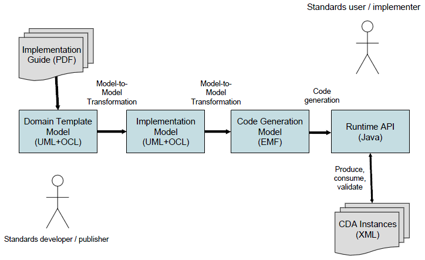

See CDA Tools Documentation for details on installation and use.
CDA Tools is a component within the modeling tools project. This component will develop a UML approach for constraining HL7 Clinical Document Architecture (CDA) to create reusable templates and implementation guides. Tooling for consumers and implementers of CDA will be produced by generating runtime components from models of implementation guides. Objectives of the CDA Tools are to:
For a more detailed description of this project's objectives, see HL7 News (April 2009), Modeling CDA with Standards-Based Tools.
